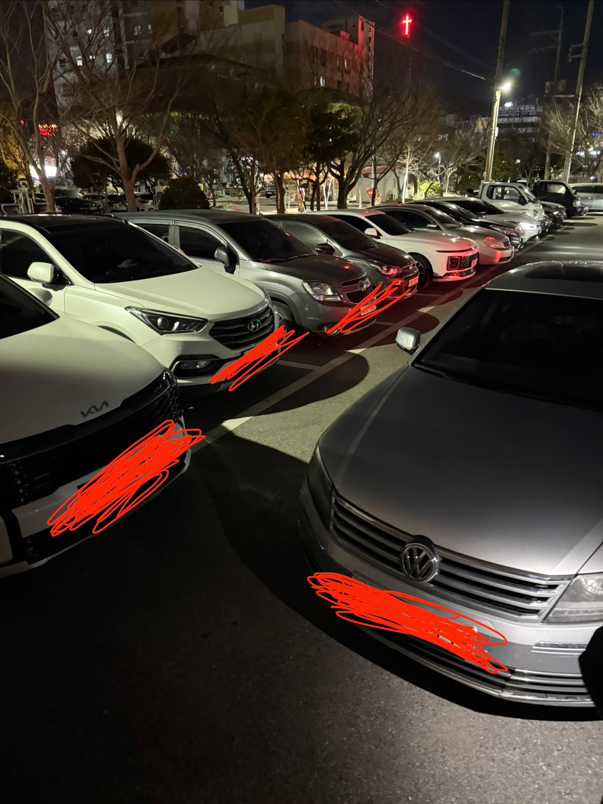

 이중주차로 누가 내 차 앞에 막아놓고 잠수타도 법적으로 아무런 처벌도, 견인도 할 수 없음 경찰에 신고해도 공무원한테 말해도 해줄 수 있는게 없다고 기다리라고만 함
댓글
수집 당시 댓글 37개
바보도알수있게 · 12 시간 전
Lio · 12 시간 전
주차장은 법적으로 도로가 아니라서 경찰이 뭘 못했는데 이제 개정되어 경찰이 개입가능해짐
· 황가두 · 12 시간 전
주차장은 도로 아니라면서 술먹고 주차하면 잡아간거?
· BlackParade · 12 시간 전
형사처벌은 가능, 행정처분(면허정지 등)은 불가라네
· 변막 · 12 시간 전
음주운전 관련 형사처벌 규정이 도로교통법에 그렇게 돼있어
· LustyMoon · 11 시간 전
이거 92년 대법판결중에 대형건물 부설주차장 음주 4미터 운전이동에대해 무죄된건이있음. 예전 공무원시험 단골문제였는데 18년에 148조개정되면서 술취한채로 운전하면 걍 처벌하게된걸로암.
· 애들자요 · 8 시간 전
유튜브 중에 변호사 2명이 댓글 대답해주는거 있던데
일방통행에서 반대로 걸어가는 사람은 합법입니까? 합법
자전거 일방통행 반대로 타는사람은? 불법
.
.
.
오토바이 일방통행 반대방향으로 끌고 가는사람은? -> 그냥 큰짐을 가져가는 사람으로 보고 합법일거 같다
라고 말함
음주한상태에서 n단에 놓고 안전벨트 어깨에 메고 끌고가면 어케 될거 같음?
· LustyMoon · 5 시간 전
운전으로 안보니까 합법이게될거같은데. 처벌규정이 운전이 행위요소이고 운전으로 보느냐문제인대.. 대법판례애 시동안걸고 조향만하거나 미는건 운전으로 안봄
· 애들자요 · 3 시간 전
ㄱㅅㄱㅅ 노홍철 당하면 밀어서 주차해야겠네
아라그니아 · 12 시간 전
퇴물된 폭스바겐 타고 댕기는 꼬라지
· 병신을보먼짖는새 · 12 시간 전
저거 타는새끼들 존나 포악함, 피해야함.
· Fatalite · 11 시간 전
흑흑 우리 이모부 젠틀하고 스마트하신분인데 폭바타시는데 시발아 ㅠㅠ
· 멍멍곰 · 11 시간 전
엄청 아끼는 차여 가지고 열심히 고치면서 오래 타는 차일 거라고 생각하자.
· 킹꼬리원숭이 · 7 시간 전
폭바타서미안하다...
0167A0 · 12 시간 전
이중주차하고 사이드채우고 전화안받거나 번호 안적어놓는 새끼들은 진짜 언젠가는 임자만나서 차 조져진다
필자 · 12 시간 전
사유지건 공영주차장이건 이중주차 방치를 처벌 못하는 게 어이없네요. 윗분 말씀대로 지금은 개정되었기를 바랍니다.
노농 · 12 시간 전
이중주차로 인한 재산피해(택시비등)는 청구 가능할건데
· 규롱 · 11 시간 전
그건 민사라서 개인이 알아서 해야되는거고, 이중주차만으로는 경찰이나 공무원이 할수있는건없음
· 칡쇼 · 6 시간 전
재물손괴
김치피자하와이안탕수육 · 12 시간 전
윗세오름 · 12 시간 전
법은 멀지만, 가까운 까나리액젓이 있음
댜기 · 12 시간 전
걍 안보이는 곳에서 긁어라
곽듣퍼 · 12 시간 전
바퀴에 락 걸어놔버려
안녕하세요개붕입니다잘부 · 12 시간 전
곡괭이 1회 사용권 정도는 줘야 한다고 본다
다롱찌 · 12 시간 전
차가 한대 더 있어야 하는 이유 ㅋㅋ
컴빌런 · 12 시간 전
사고 났다고 문자 보내면 거의 바로 온다고 카더라
· 커리부어스트 · 11 시간 전
몇 번 본 건데 전화번호도 없이 파킹 채워놓는 새끼 봄. 손해 보던 차주가 그 상가 다 돌면서 주차한 새끼 찾는 것도 본 적 있다
즙짜지마라 · 12 시간 전
옆에지나가는척 키로 긁어
드스넷 · 11 시간 전
법은 이런데 있어야되지않나
차량에 연락처도 없이 놔뚜고 다닌다는게 좀;
개인정보까지 좀 그러면 안심번호도 얼마든지 있고
락크쥰 · 11 시간 전
좆같은 새끼들 주차해놓으면 타이어 구찌 조사놔라 ㅋ 그거 찾기도 힘들다
피스요 · 11 시간 전
개똥차
텍켄 · 11 시간 전
재물손괴가 아닌가
급공노비 · 10 시간 전
지자체에 관리책임을 물을 수 없나?
솔서리 · 9 시간 전
어쩔수없이 이중주차 하면 지차 밀라고 기어봉 n에 놓고들 가던데
안그러는새기들은 대가리에 빵꾸난듯
· 내일부터착한말만함 · 1 시간 전
요즘 차는 파킹기어 안 하면 시동 안 꺼지는 것도 있어서 파킹으로 하고 시동 끄는 법 따로 배워야 됨.
본문은 그것도 아닌데 저래논 거면 그냥 10샊..
슈퍼앵그리 · 2 시간 전
개씨발놈들 ㅋㅋㅋ 경계성지능장애새끼들
· 내일부터착한말만함 · 1 시간 전
언제까지 경계성 지능장애 찾을거야
경계선지능
경계성 아니고 경계선 장애 아니라서 경계선
남을 지능으로 깔거면 용어나 제대로 쓰자